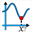

Permite calcular el valor de x para el cual una función f es mínima sobre un intervalo [a; b].
El valor sólo está garantizado de ser correcto si la función es decreciente de a hasta el mínimo y a continuación creciente hasta b.
Se crea un tal objeto con la herramienta

.Se debe, en la caja de diálogo que se abre:
Elegir la función en la lista de las funciones ya creadas.
Elegir el valor de a.
Elegir el valor de b.
Elegir el error deseado.